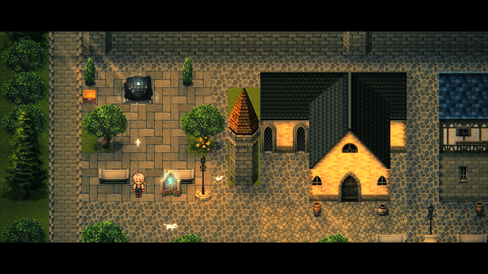
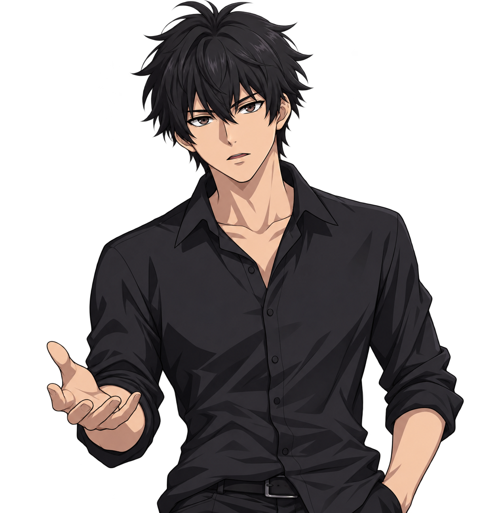

RPG DE AÇÃO · FANTASIA SOMBRIA
Um reino dividido.
Uma verdade enterrada.
Seis generais tomaram a coroa.
Mas nem toda história merece ser
acreditada.
A HISTÓRIA
Heróis para o povo.
Sombras no trono.
Um rei consumido pela paranoia. Uma noite sem estrelas. Seis generais que derrubaram a família real e dividiram Rellgard entre si.
Longe dos salões do castelo, um jovem aprendiz de uma guilda de mercenários tenta sobreviver em Valgrenn. Missões pequenas, moedas contadas e um passado que ainda não conhece.
O reino se tornou um labirinto de mentiras.
Qual caminho leva à verdade?

Combate em tempo real
Leia o perigo. Encontre a abertura. Faça cada golpe valer.
Cinco caminhos
Uma classe, uma identidade e uma maneira de enfrentar Rellgard.
Segredos pelo caminho
Ruínas, encontros e pistas de uma história que foi silenciada.
AS CLASSES
Escolha o seu caminho.
OS PERSONAGENS
Ninguém cruza seu caminho
por acaso.
Entre laços antigos e intenções ocultas,
cada encontro deixa
uma marca.

Conheça os personagens. Preserve o mistério. Apresentações sem as grandes revelações da história.
O MUNDO
Há histórias onde
a luz não alcança.
Da tranquilidade aparente de Valgrenn
às profundezas de um
templo esquecido.
EM MOVIMENTO
Dentro do labirinto.
Fragmentos da jornada
CAPTURAS DO JOGOA JORNADA CONTINUA FORA DO JOGO
Seu lugar em Rellgard.
Converse com outros aventureiros, compartilhe suas descobertas
e
acompanhe os próximos passos de The Labyrinth of Six.